Inner Ring Studio → Attio/Linear grade
Visual gap report. References were captured live from Linear's and Attio's shipped product CSS and UI; IRS screenshots are the current branch running locally. Full written report: report.md · sources: research-sources.md.
01The reference frames
What "grade" means concretely: one persistent shell, recessed sidebar, breadcrumb top bar, dense proportional-type tables, color only as meaning.
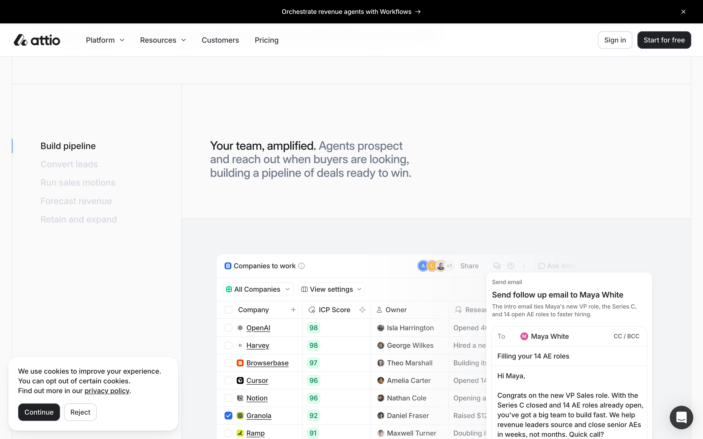
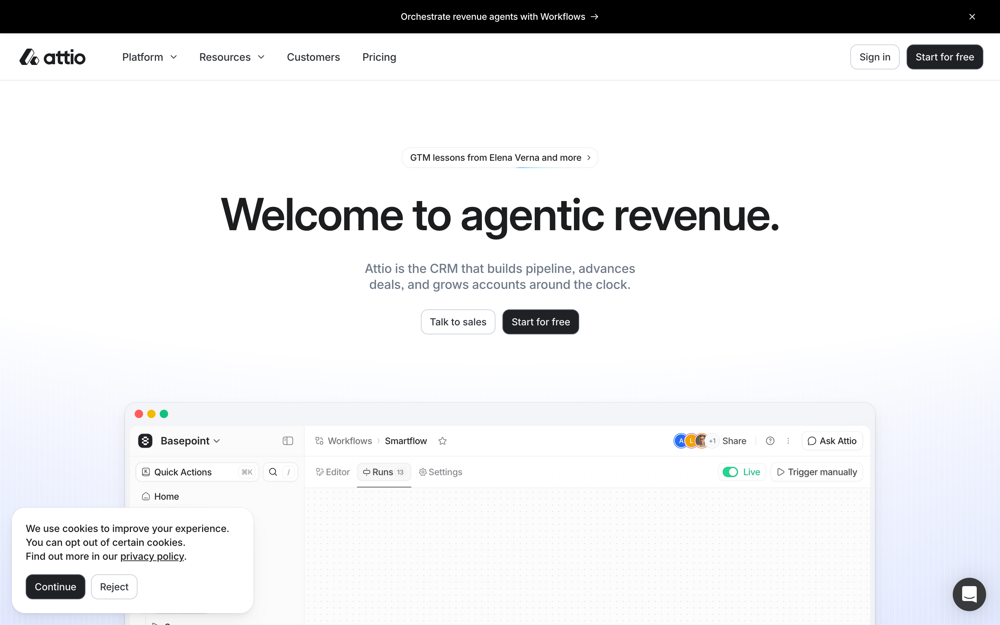
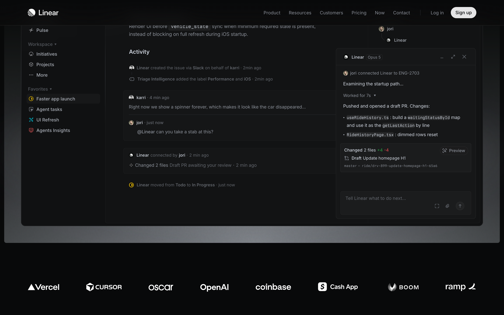
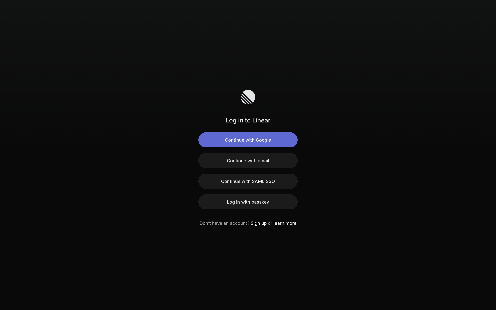
02Home — density, redundancy, safety
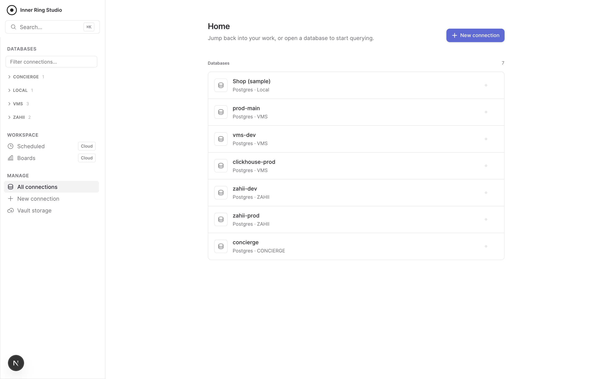
- ~88px rows in a flat list that duplicates the sidebar tree. Attio: ~40px rows with identity + metadata.
- prod-main and vms-dev look identical. No environment field anywhere — the cheapest trust feature a DB tool can ship (badge + write-confirm on prod).
- Two search inputs (⌘K + “Filter connections…”), two primary CTAs on one screen. Linear: “Don’t compete for attention you haven’t earned.”
- Gray status dot with no meaning. Give it one: pool live / idle / last connect failed.
- No “Recent” resume section despite frecency ranking already existing in the codebase.
03The studio — where the product is won or lost
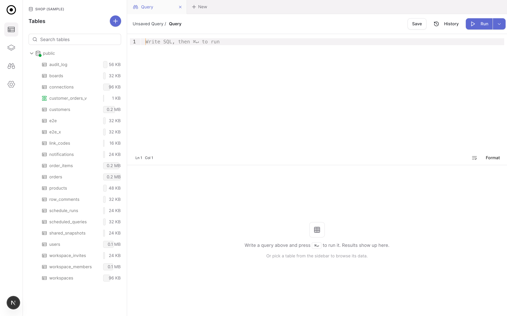
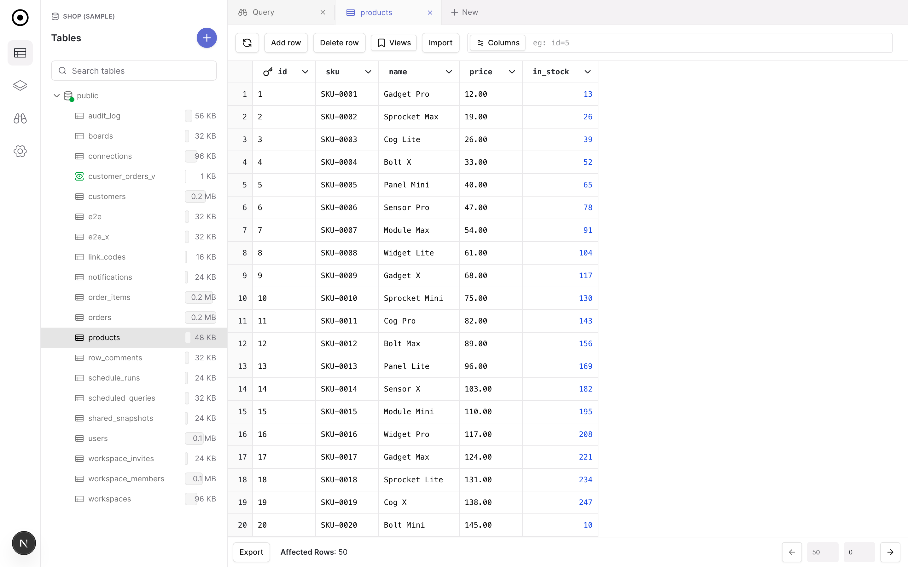
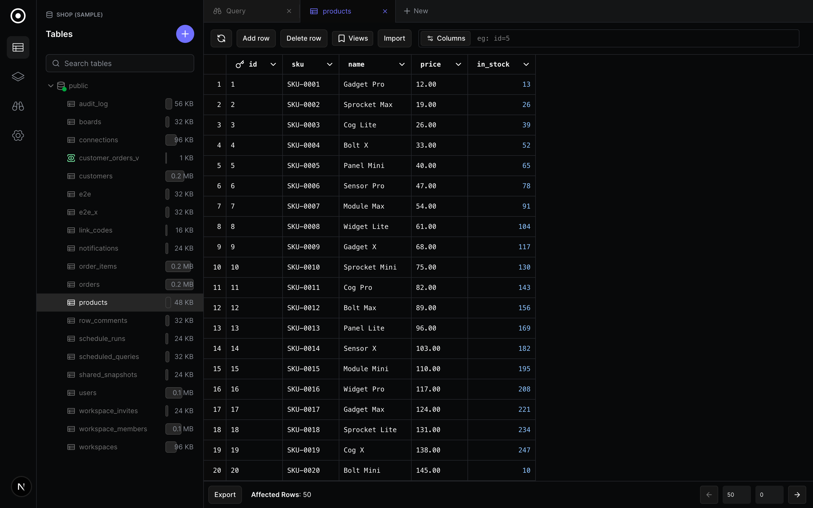

04Token comparison — shipped CSS vs ours
| Token | Linear (app bundle) | Attio (shipped) | IRS today | |
|---|---|---|---|---|
| UI font | Inter Variable · 400/510/590 | Inter + Inter Display | Inter · 400/500/600 | ≈ match |
| Mono font | Berkeley Mono | JetBrains Mono | default mono, bold, everywhere | gap 3.1 |
| Type scale | 15 body · 13 dense · 12 · 11 | ~same, 4px grid | 16 body · 13 nav · 19 title | 15px body |
| Accent | #5e6ad2 / #7170ff | #266df0 | #5e6ad2 | match |
| Surfaces (light) | content #f9f9fa · sidebar #efeff0 | white + cool LAB ramp | all #ffffff + borders | gap F1 |
| Surfaces (dark) | #08090a → #121213 → #191a1b levels | lab() ramp | one level: #08090a | gap F1 |
| Text ramp (dark) | #f7f8f8 · #d0d6e0 · #8a8f98 · #62666d | 4-step | 2–3 steps in practice | adopt 4 |
| Radius | 8 base · 6 blocks · 10 cards · pill | 8 base | 8 base (--radius .5rem) | match |
| Shadows | 0 3px 6px -2px #00000005… | 7 layers, ≤7% alpha | mixed | audit |
| Motion | .1s / .25s / .35s + ease-out suite | calm cubic-beziers | motion.ts: .14/.175/.22 ease-out | match |
| Palette spec | 720px · 13vh top · 46px rows · kbd hints | “Quick Actions ⌘K” + / | home shell only | gap F4 |
| Theme generation | 3 inputs → LCH color-mix | lab() ramps | hand-picked hex per theme | P3 |
05Priority plan
| P | Change | Start in | Effort |
|---|---|---|---|
| P0 | Grid skin: proportional text cells, mono only for numerics/ids, alignment by type, soft gridlines, footer “50 rows · 23 ms”, selection bar (Delete only on selection) | query-result-table.tsx · table-optimized/ | 2–3 d |
| P0 | Global ⌘K in studio: frecency tables + saved queries + actions, per-row kbd hints, Linear's measured spec | command-palette.tsx → root | 2 d |
| P0 | Environment badges + prod write-confirm gate | connection schema · executor gate | 1–2 d |
| P1 | Surface levels (recessed sidebar, dark elevation ramp), hairline pass, remove FAB | globals.css · nav-layout.tsx | 1–2 d |
| P1 | Home: 44px rows, identity dots, status semantics, Recent (frecency), single CTA | (main)/local/page.tsx | 1–2 d |
| P2 | Unified shell: studio inside main frame, breadcrumb top bar | (main) layout · database-gui.tsx | 3–5 d |
| P2 | Row peek panel (replaces dialog) · live query timer + cancel · collapse doubled empty state | row-detail-dialog.tsx · query-tab.tsx | 2–3 d |
| P3 | Footer aggregates on numeric selection · OKLCH 3-input theming · ? shortcut overlay + Kbd component | result-stat.tsx · globals.css | 3–4 d |
05bNorth-star mocks — the rebuild target
Approval gate for the full rebuild (rebuild-plan.md). Live files: mock-home.html · mock-studio.html — open them, the theme button toggles dark.
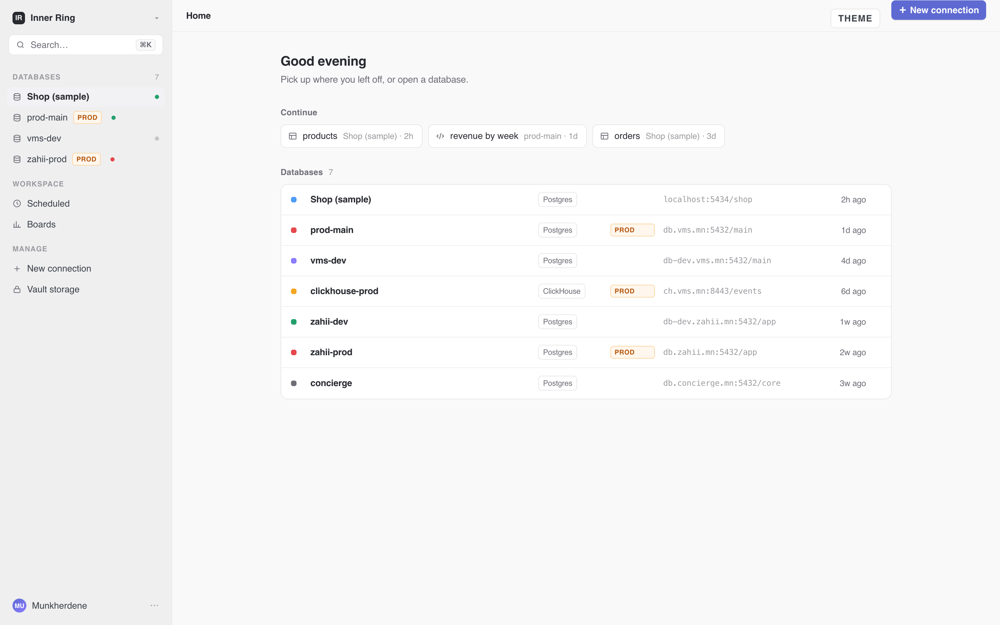
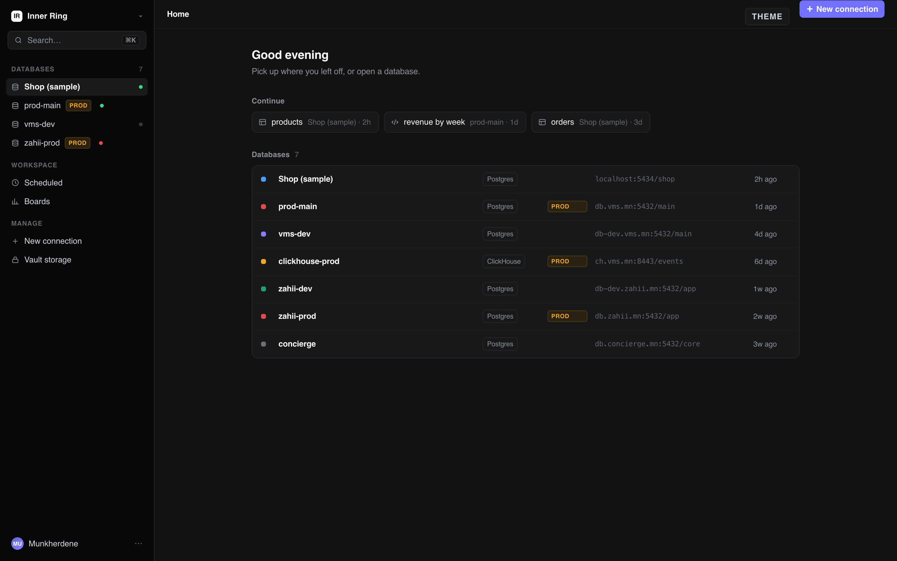
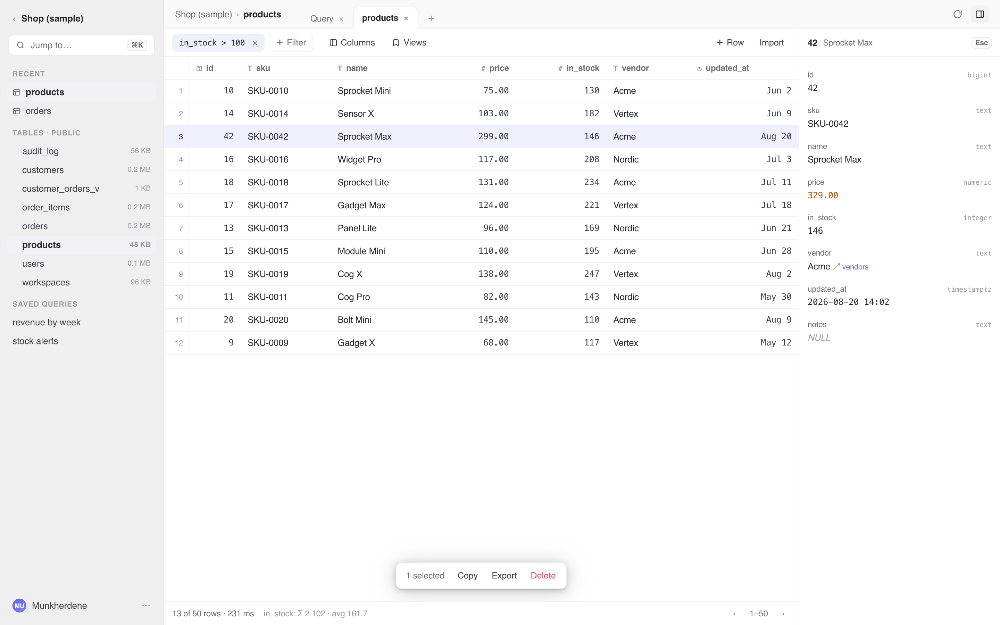
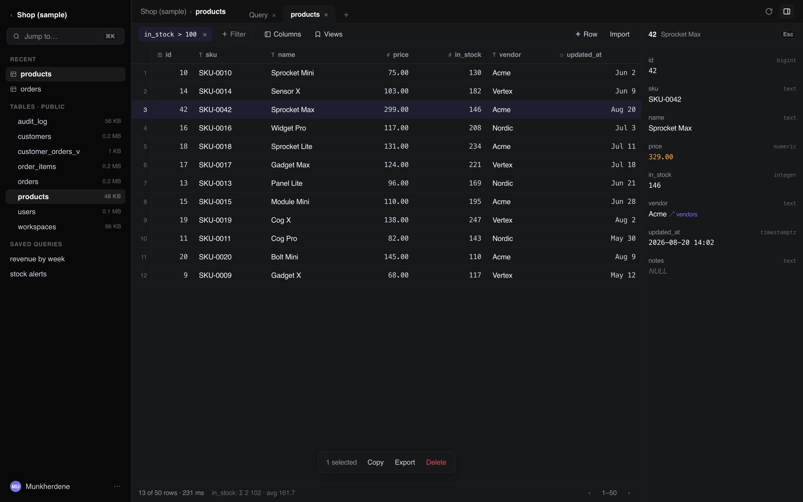
06Studio pass (5d6db64) — review
The follow-up "studio workspace pass": schema-first open, folder collapse, row inspector, color sweep. Full written review: studio-pass-review.md. Verdict: right direction, hold the deploy.
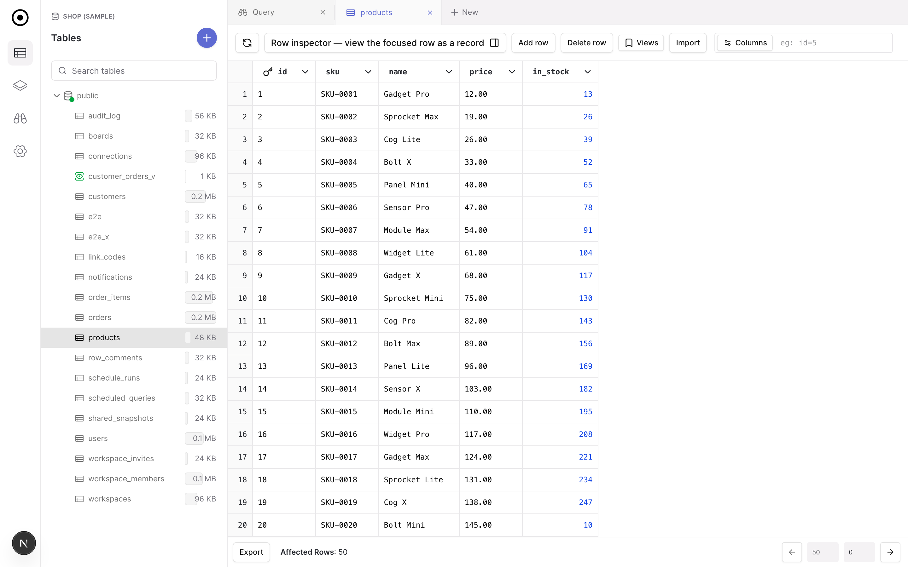
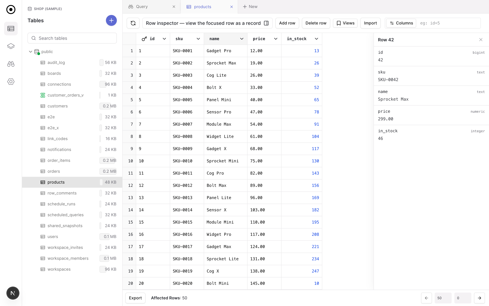
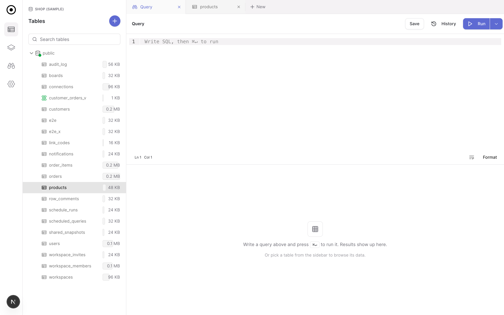
- Schema-first open — correct; verified live.
- Color sweep + quieted titles — exactly the papercut work the report asked for.
- Folder collapse — right pattern; but hide, don't unmount (accidental click currently destroys tree state), and persist via scopedStore.
- Silent regression to fix before ship: moving ConnectionsSidebar off the default tab killed the studio's only /api/db poll — and with it git-vault background sync + the remote-change toast.